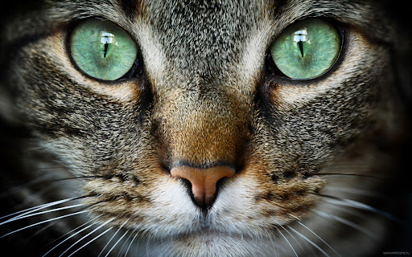

|  | ||
Бенгальская кошкаБенгальская кошка — крупная кошка с блестящей шерстью, очень развитой мускулатурой и толстым хвостом, который часто свисает до земли. Бенгальская кошка внешне напоминает дикую кошку: характерная густая роскошная шерсть имеет пятнистый окрас и мраморные разводы. На широкой голове располагаются небольшие уши и бакенбарды, глаза имеют миндалевидную форму и чёрную окантовку. Хвост толстый, сужается к чёрному кончику. Ни одна другая порода кошек не имеет такого эффекта золотистого или жемчужного мерцания шерсти, который можно обнаружить у бенгальских кошек. |
||
ОписаниеОписание кошек бенгальской породы чаще всего сводится к выражению «леопард в миниатюре». И в самом деле, внешность моей знакомой может ввести в заблуждение: на первый взгляд, перед вам истинный хищник, грациозный и статный. Впрочем, те, кто знаком с характером бенгальских кошек, знают: внешность обманчива… Для домашних кошек бенгалы весьма крупны: вес взрослой кошки может достигать 8 килограммов. К слову, коты заметно отличаются от кошек: у них более крепкое и мускулистое тело. Ещё одна особенность этой породы – задние лапы: они чуть длиннее передних, совсем как у курильских бобтейлов, и это делает моих «леопардовых» друзей отличными прыгунами. И всё же главная отличительная черта бенгальских кошек – это великолепие экзотических окрасов! Существует три вида рисунка на их шикарной «шубке»: пятнистый, розетчатый и мраморный. Цветов же признано всего пять: роскошный браун, загадочный серебристый, таинственный угольный, восхитительный снежный и чрезвычайно редкий голубой. Лично я без ума от снежных бенгалов. Мрр, они просто неотразимы! ХарактерХарактер бенгальских кошек объединяет темпераменты дикого зверя и домашнего животного. У бенгалов хорошо развит охотничий инстинкт. В любом возрасте они признают игры «на охоту» — гонки за мячами и игрушками, ловлю махалок, погони и преследования. Хорошо живут в стае. Быстро дичают при вольерном содержании. При воспитании котят очень важно приучать их к рукам, иначе они могут вырасти диковатыми. Вопреки слухам, бенгалы не кровожадны и не агрессивны. Никакой опасности для детей и домашних животных (кроме грызунов и птиц) не представляют. С лёгкостью обучаются ловле мышей, но редко едят их. |
||
|
||
| НА ГЛАВНУЮ |